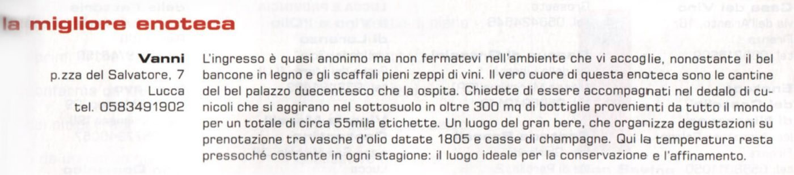
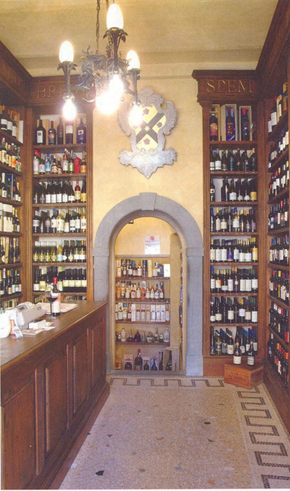
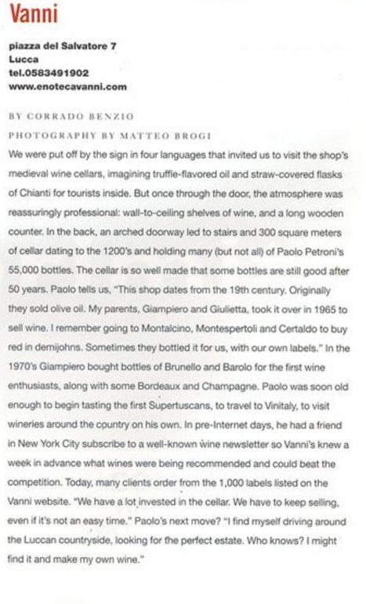
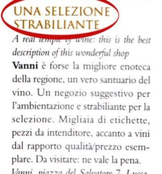
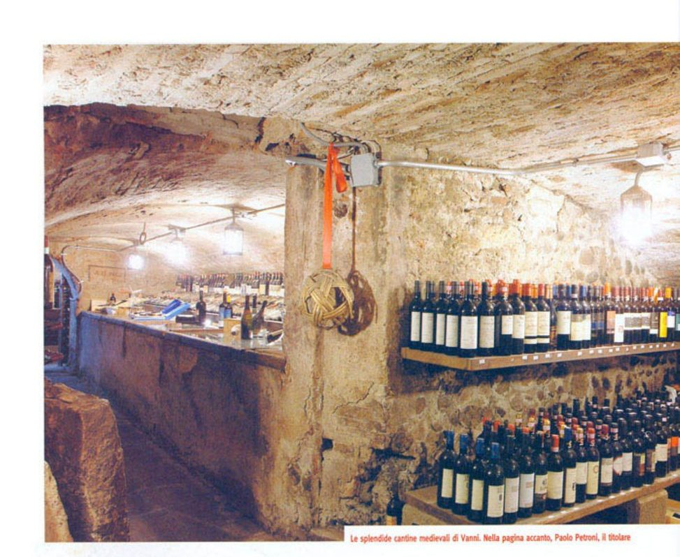
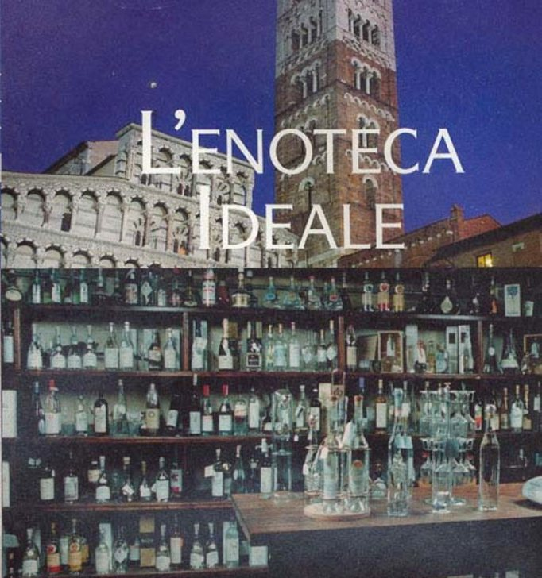
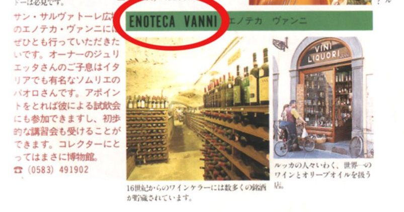

Almanacco del Bere Bene · gennaio 2009
La migliore enoteca
Il vero cuore di questa enoteca sono le cantine del bel palazzo duecentesco che la ospita.
The true heart of this wine shop is the cellars of the beautiful 13th-century palazzo that houses it. (our translation)

Il Mio Vino · aprile 2006
Cantina di palazzo
Un mondo nascosto, una discesa non agli inferi ma ad un luogo di piaceri del gusto.
A hidden world: a descent not into the underworld, but into a place of pleasures for the palate. (our translation)

Gambero Rosso, English edition · No. 42, 2005
Vanni, Lucca
The cellar is so well made that some bottles are still good after 50 years.
La cantina è fatta così bene che alcune bottiglie sono ancora buone dopo 50 anni. (nostra traduzione)

Tuscany Class · agosto 2004
Una selezione strabiliante · Daniele Cernilli
Un negozio suggestivo per l'ambientazione e strabiliante per la selezione.
A shop full of atmosphere, with an astonishing selection. (our translation)

Gambero Rosso · giugno 2004
L'Italia del bere · Internet & terroir, la ricerca estrema
Il vero segreto dell'enotecaro è uno solo: stappare tanto.
A wine merchant has only one real secret: open lots of bottles. (our translation)

Euposia · gennaio-febbraio 2004
L'Enoteca Ideale · Fabio Pracchia
Nelle annate buone prendo sempre qualche cassa in più, per far sì che il vino possa invecchiare e proporlo quando è il momento giusto.
In good years I always buy a few extra cases, so the wine can age and I can offer it when the time is right. (our translation)

VERY, Japan · dicembre 1997
食べて、飲んで、飾って楽しいルッカのショッピング
コレクターにとってはまさに博物館。
Per i collezionisti, un vero museo. (nostra traduzione)
For collectors, truly a museum. (our translation)
